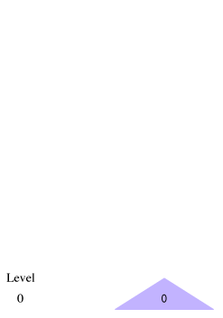
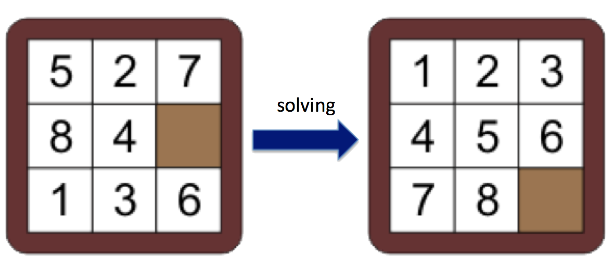

Clarifications/Reminders
- Start Early!
- Make sure you read through the project specs before starting, especially the Spark references at the bottom.
- You will test your code on the computers in Lab 215, the project will be graded on those computers.
Table of Contents
Goals
The goal of this project is to get you familiar with the MapReduce programming model using the Apache Spark framework. The the project will give you an opportunity to turn breadth-first traversal (an algorithm with which you're hopefully already familiar) into a format that is compatible with the MapReduce framework. We hope that by doing this project you will gain an appreciation for the MapReduce programming model, and at the same time pick up a very marketable skill.
Background
Strongly Solving Puzzles
One-player, reversible puzzles are lots of fun; popular examples you may have played yourself include Rubik's™ cube and sliding puzzles, like Rush Hour, Klotski and the Fifteen puzzle. These puzzles have the property that you can get from any position (a particular unique configuration of the puzzle) to another; there are no "dead ends". In this project, you will write a breadth-first solver that starts from the single solution position, and walks the graph, recording every new position it reaches (and how many moves it took to get there, we call that the level). Unlike breadth-first search, in which you stop when you've found a particular position, here you're going to exhaustively visit the entire graph (this is called strongly solving). To do this, we keep track of two mappings (which in Python, are dictionaries):
pos_to_level: Given a position, what is its level? (when you're all done, this is the only mapping we care about, and you'll write this to a text file)level_to_pos: Given a level, what are all the positions? (we'll use this information in the process of strongly solving the puzzle, but we don't need it afterwards)
For the purpose of this project, we are going to be solving the generalized Fifteen puzzle (Width x Height), but we'll give you all the code you need for this particular game. With a smaller puzzle (small values of Width and Height), it should also be easier for you to verify the correctness of your output. Of course, you can try larger parameters if you have enough time, and space on your hard drive.
Breadth-First Solver
Here is our generic breadth-first solver in Python. It takes in a puzzle, and a max_level as arguments. The parameter max_level
is used to control how far the solver should solve (if it's left out,
or set to -1, the solver will visit every position in the puzzle graph).
Here, the parameter puzzle is an object with two important methods:
children()- returns a list of all the neighboring positions.solution()- returns the single solution position.
level_to_pos = {}
pos_to_level = {}
def solve(puzzle, max_level=-1):
"""BF visit the entire puzzle graph, build level_to_pos, pos_to_level structures."""
solution = puzzle.solution()
level = 0
level_to_pos[level] = [solution] ### level 0 consists of a single solution
pos_to_level[solution] = level
### While there are still positions on the frontier
### (seen for the first time in the last iteration)
while level_to_pos[level] and (max_level==-1 or level < max_level):
level += 1
level_to_pos[level] = []
### For every position on the last level (these farthest-away positions are the "frontier")
for position in level_to_pos[level-1]:
### For every child of those frontier positions
for child in position.children():
### If it's the first time we've seen this child
if child not in pos_to_level:
### Update the mappings to remember it, and it will be part of the new frontier
pos_to_level[child] = level
level_to_pos[level].append(child)
del level_to_pos[level] ### the last level is always empty, so remove it.
Example using the 3- and 5-gallon "Die Hard 3" puzzle
 Imagine you have a number (between 0 and 8, inclusive) that you can
increase or decrease by 3 or 5, as long as it never gets below 0 or
above 8. The goal of the game is to get to 0. This is the opposite of
the "Die Hard 3" puzzle where the goal was to start at 0 and fill and
empty 3- and 5-gallon jugs to get to 4. The overall game graph is shown
on the left; you might take a second to convince yourself that this is
every position that exists, and that the edges connecting positions are
the only connections between positions that are possible:
Imagine you have a number (between 0 and 8, inclusive) that you can
increase or decrease by 3 or 5, as long as it never gets below 0 or
above 8. The goal of the game is to get to 0. This is the opposite of
the "Die Hard 3" puzzle where the goal was to start at 0 and fill and
empty 3- and 5-gallon jugs to get to 4. The overall game graph is shown
on the left; you might take a second to convince yourself that this is
every position that exists, and that the edges connecting positions are
the only connections between positions that are possible:
If we run our breadth-first solver algorithm on this, here's what would happen. Note that during the last level=5 iteration, it visits all the children of the frontier [4] and finds 7 and 1,
but they've both been seen before, so there are no new positions added
to the frontier, and the next iteration breaks out of the while loop.
level = 0, before while |
Known graph so far | After level = 1 |
Known graph so far | After level = 2 |
Known graph so far | After level = 3 |
Known graph so far | After level = 4 |
Final graph | |
|---|---|---|---|---|---|---|---|---|---|---|
level_to_pos[0] |
[0] |
 | [0] |
 |
[0] |
 |
[0] |
 |
[0] |
 |
level_to_pos[1] |
|
[5, 3] |
[5, 3] |
[5, 3] |
[5, 3] |
|||||
level_to_pos[2] |
|
|
[2, 8, 6] |
[2, 8, 6] |
[2, 8, 6] |
|||||
level_to_pos[3] |
|
|
|
[7, 1] |
[7, 1] |
|||||
level_to_pos[4] |
|
|
|
|
[4] |
|||||
|
|
|
|
|
|
|||||
pos_to_level[0] |
0 |
0 |
0 |
0 |
0 |
|||||
pos_to_level[1] |
|
|
|
3 |
3 |
|||||
pos_to_level[2] |
|
|
2 |
2 |
2 |
|||||
pos_to_level[3] |
|
1 |
1 |
1 |
1 |
|||||
pos_to_level[4] |
|
|
|
|
4 |
|||||
pos_to_level[5] |
|
1 |
1 |
1 |
1 |
|||||
pos_to_level[6] |
|
|
2 |
2 |
2 |
|||||
pos_to_level[7] |
|
|
|
3 |
3 |
|||||
pos_to_level[8] |
|
|
2 |
2 |
2 |
Getting started
As mentioned above, we are going to be solving the generalized Fifteen puzzle, which we call the Sliding puzzle (with input parameters width and height). This puzzle consists of numbered tiles in a random ordering with one tile missing. The objective of the game to place the tiles in order as shown in the image below, for the 3x3 case.
If you've never played the game before, it might be helpful (and fun!) to try it here. That website allows you to play a 3x3, 4x4, or 5x5 puzzle.
Starter Code
To get started on the project, you are being given some code along with this specification.
The file you will need to modify and submit is:
SlidingBfsSpark.pyis where you will put your MapReduce job to solve a (Width x Height) Sliding puzzleproj2-1.txtis where you will put your answers to the follow up questions.
You are free (and encouraged) to define and implement additional helper functions, but they must be in SlidingBfsSpark.py. Changes you
make to any other files will be overwritten when we grade your project.
The rest of the files are part of the framework and should not be modified. However, you will need to look at them as well.
Makefiledefines the configurations for the run commands including the size of the sliding puzzle, and the level of parallelism to use. Please look at this file to see how Spark is being invoked on your code.SlidingBfsReference.pycontains the iterative breadth-first search implementation of a Sliding puzzle solver described above. You can use this to help verify the correctness of your output and help brainstorm your MapReduce algorithm.Sliding.pydefines helper functions to produce solutions and children of WxH Sliding puzzle "objects" (which are really just Python tuples).
Your Job
Your task will be to implement an iterative MapReduce job to solve the general Sliding puzzle.
As described above, this MapReduce job will take as input a width and height
describing a Sliding puzzle. Using the solution, it will repeatedly
expand the BFS tree, and generate a mapping between every position and
the level at which it is in the BFS tree.
We represent a Sliding puzzle as a Python tuple of strings. Each
tile is an alphabetic character and the empty space is represented with
a hyphen '-'.
Therefore, after running your MapReduce job, we expect your program to produce a text file of the following form. (for example, for a 2x2 case):
0 ('A', 'B', 'C', '-')
1 ('A', '-', 'C', 'B')
1 ('A', 'B', '-', 'C')
2 ('-', 'A', 'C', 'B')
2 ('-', 'B', 'A', 'C')
3 ('B', '-', 'A', 'C')
3 ('C', 'A', '-', 'B')
4 ('B', 'C', 'A', '-')
4 ('C', 'A', 'B', '-')
5 ('B', 'C', '-', 'A')
5 ('C', '-', 'B', 'A')
6 ('-', 'C', 'B', 'A')
Your output is not required to be sorted by level as ours is, but
you might find it helpful for debugging. If it is sorted, you could use
a utility such as diff (or vimdiff) to easily catch any errors. If you have never used diff before, this article does a good job of explaining its usage along with great examples.
Here's a recommended plan of attack:
- Look at the
SlidingBfsReference.pyimplementation and understand how it works. Start brainstorming with your partner how you can transform this into the MapReduce framework. - Your MapReduce code will likely look nothing like the BfsReference solver!
- You will not have
pos_to_levelandlevel_to_posdictionaries, instead you will keep track of this information through a Spark RDD which contains (key, value) pairs. - Review lab 8 to remind yourself how MapReduce looks and works in Python-Spark.
- Read the section below, "Notes on Spark" and review the Spark documentation to become familiar with the tools you can use.
- Implement a correct and reasonably efficient solution that works for at least 2x2 and maybe 3x3.
- Remember that MapReduce can make use of multiple functions (Don't try to do everything in one function!).
- Before you start coding, make sure you yourself understand what you want to pass into your functions (i.e. figure out what keys and values you want to use).
- Don't forget that Reduce typically groups the dataset by keys and Spark provides functions that allow you to do this on an RDD.
- Be sure to test your code on the 5x2 puzzle! If you find that you are reaching the benchmark for the 2x2 and 3x3, but not the 5x2, be sure to review the Spark Notes -- specifically the Advanced Notes portion to help optimize your code.
Follow Up Questions to Submit
Answer the following questions individually. You may discuss with your partner but you have to answer the questions on your own. Your answers must be in the file named proj2-1.txt.
1. Some games (e.g., Rush Hour, Klotski, etc.) do not have a single solution, but a set of solution positions (and a single starting position). This is because those puzzles only care about the final position of a particular block, and don't care about the location of the other blocks. In terms of an API change, solution() wouldn't be a no-argument function that returns the single solution position anymore, but instead be a predicate that took in a position and returned whether it was in the solution set or not. Your friend suggests to generate all the permutations of blocks (or whatever else is being moved / rotated / changed in the puzzle) that satisfy the solution predicate, call them all solutions (level = 0), and proceed normally.
| 1 | 2 |
| 3 | - |
What is one potential problem with this idea? (Hint: take a look at the number of positions in the 2x2 final solution and compare that with all the ways of permuting four pieces).
2. What's a better algorithm to solve these kinds of puzzles? How would you modify your original solver?
3. On the same note, what needs to be changed to solve loop-free puzzles, like Peg Solitaire. For every position, rather than the distance to the solution, what might you store? What changes would you make to your solver? In the case of Peg Solitaire, would it change the memory requirements of your solver?
Debugging and Testing
You should test your code on the computers in Lab 215. Your program will be graded in one of those computers as indicated in class.
The provided Makefile gives you the ability to run
your solver on a few common cases. Be sure to understand all of the
"targets" provided to you in the Makefile. For example:
$ make run-small # Runs your solver with a Sliding puzzle of size 2x2
In the ref_out directory, we have also provided you with the correct output and format we expect for the 2x2 Sliding puzzle.
You can use this small case as a basic sanity check and to verify that your output format is correct.
While you are working on the project, we encourage you to keep your code under version control. However, if you are using a hosted repository (i.e. GitHub, BitBucket, etc), it MUST be private..
Before you submit, make sure you test your code on Lab 215. We will be grading your code there. IF YOUR PROGRAM THROWS AN EXCEPTION/ERROR WHICH COULD HAVE BEEN REVEALED BY SIMPLE TESTING, YOU WILL AUTOMATICALLY GET A ZERO FOR THAT PORTION OF THE ASSIGNMENT. There is no excuse not to test your code.
Grading
- First, your code will be graded on the correctness of the produced solution. This will be done by comparing your output file containing the solved values with the file that the staff solution outputs.
- Second, we will ensure your code is actually running in parallel, that is, that it makes use of Spark RDDs, and its parallel transformations, map and reduce.
- It is not acceptable to implement a serial algorithm or a serial version of the
SlidingBfsReference.pyin Spark. Such solutions will receive NO credit. - Thirdly, we will be comparing the runtime of your code against the staff solution.
- We will run your code with the
MASTERset tolocal[8](runs locally with 8 cores). This is the default with our Makefile. - Here are some approximate benchmarks of our staff solution (measured on an uncrowded hive machine)
- 2x2: ≤ 30 seconds
- 3x3: ≤ 1 minute
- 5x2: ≤ 4 minutes
- Be sure to test all (2x2, 3x3, 5x2) puzzle sizes as passing the 3x3 benchmark does not mean you will necessarily reach the 5x2 benchmark as well.
- We will run your code with the
- Finally, a portion of your grade will correspond to your answers to the follow up questions in
proj2-1.txt
Other Grading Notes
- We will award substantial partial credit based on how close your solution is to these benchmarks.
- You are required comment your code, including any helper functions you define. This helps our graders easily understand your thinking, and helps us give you partial credit.
- If you can consistently achieve significantly better performance than our staff solution, feel free to let us know! (in a private Slack message).
Submission
proj2-1 is due Sunday (26/04/2015). You should just be turning in SlidingBfsSpark.py and proj2-1.txt.
Notes On Spark
We highly recommend you read and understand this short Spark programming guide, especially the section on key-value pairs and their transformations. After all, if you choose to put Apache Spark on your résumé, you want to be able to answer any questions that are thrown your way ;).
Finally, the other resource that will come in handy is the detailed Spark-Python API, available at: http://spark.apache.org/docs/latest/api/python/pyspark-module.htmlGlobal Variables
In the lab, we mentioned global variables should be avoided in Spark. This isn't entirely true - let us elaborate on this a bit more. Global variables may cause poor performance because they require information to be shared among the nodes in your cluster. If this global variable is frequently being changed, this data must frequently be copied to and from nodes, which hurts parallelism. However, if your global variable is simply a read-only constant, (for example, the width and height of the board), that is fine.
If you have some information that is to be shared and processed by all the nodes in parallel, you should be using an RDD (resilient distributed dataset), the primary abstraction in Spark.
For the curious, Spark provides other abstractions for shared variables, namely broadcast variables and accumulators. Our solution does not make use of these, but you are free to try them if you wish.
Advanced Notes
After getting a basic solution working, use these techniques to further optimize your performance.
Lazy Evaluation
As you should understand from reading the Spark docs, transformations on RDDs in Spark are lazy. The result is only computed when it is required by some action, such as count or saveAsTextFile.
You may find that you achieve better performance by not "materializing" your RDD for each iteration of your MapReduce job -- that is, you may allow several iterations of transformations to occur before calling an action on it. Spark is able to optimize the collection of transformations better than each transformation individually.
Partitioning
An RDD is a collection of elements partitioned across nodes in a cluster. By default, Spark simply splits up the RDD into sequential partitions and ships them off to individual nodes. When it is time to reduce, KV pairs may need to be shipped across nodes in the shuffling phase. Because shuffling requires moving data around (sometimes over a network), it is a comparatively expensive operation.
You may find that you can achieve better performance by partitioning
your dataset in a more intelligent way. This allows some of the reducing
to take place locally on a particular node, rather than requiring it to
be shuffled. See the partitionBy operation on RDDs for more info.
As a final note, since repartitioning itself requires reshuffling large chunks of the data, it may be useful to not repartition on every iteration, but rather every k iterations, where you decide what k is.